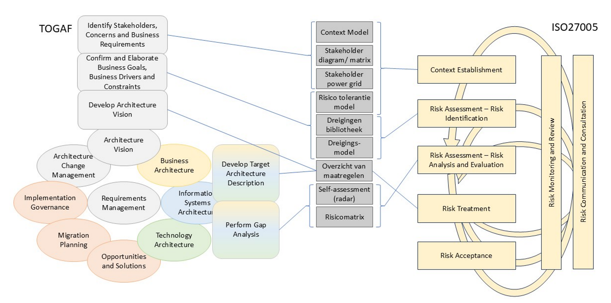

Digitale soevereiniteit is voor veel organisaties uitgegroeid tot een strategisch vraagstuk. Waar voorheen het economische voordeel dominant was in technologiekeuzes, ontstaat steeds meer behoefte aan grip op afhankelijkheden van leveranciers, cloudplatformen, geopolitieke invloeden en digitale ketens. Voor digitaalkundige architecten betekent dit dat architectuurkeuzes mede moeten worden beschouwd vanuit het digitale soevereiniteitsbelang, en dat het behouden of versterken van keuzevrijheid daarbinnen (digitale autonomie) een doel wordt.
Deze whitepaper positioneert digitale soevereiniteit als een integraal architectuurvraagstuk. Het onderwerp raakt niet alleen data en infrastructuur, maar ook businessprocessen, governance, sourcing, security, compliance en de bestuurlijke besluitvorming over risico’s. De kernboodschap van deze whitepaper is dat digitale soevereiniteit een essentieel te beschouwen aspect is van de digitale architectuur. De mate waarin dit doorwerkt in concrete keuzen of beperkingen kan verschillen per organisatie of per organisatie-element. Niet elke waardestroom, capability of voorziening vraagt om dezelfde mate van autonomie.
Om organisaties hierbij te ondersteunen, introduceert deze whitepaper praktische hulpmiddelen en een risicogebaseerde aanpak voor contextanalyse, het stellen van doelen, het creëren van draagvlak, en de concretisering naar identificatie, beoordeling en behandeling van risico's. Via de daarbij in te zetten hulpmiddelen is er een relatie te leggen naar het reguliere architectuurproces. Het geheel dient een cyclisch proces te zijn, omdat omstandigheden, risico-afwegingen en oplossingen zich continu ontwikkelen. Deze whitepaper is daarmee een eerste stap naar een meer architectuurgedreven benadering van digitale soevereiniteit. De aanpak biedt een praktisch vertrekpunt dat in organisaties verder kan worden ingebed, getoetst en doorontwikkeld.
De whitepaper sluit af met aanbevelingen voor digitaalkundige architecten en organisaties die digitale soevereiniteit belangrijk vinden. Door digitale soevereiniteit niet te benaderen als los thema, maar als een structureel onderdeel van enterprise-architectuur, risicosturing en governance, kan gericht worden gestuurd op verbeteringen. Daardoor worden cruciale afhankelijkheden in kritieke processen, data, technologie en ketenrelaties transparant en bestuurbaar, en zijn ze op gestructureerde wijze te adresseren.
Organisaties opereren in een digitale werkelijkheid met steeds sterkere afhankelijkheden van internationaal opererende leveranciers, wereldwijd gebruikte infrastructuur- en platformdiensten, en AI-platforms en toepassingen die daarop voortbouwen. Cloudmigraties, toenemende cyberdreigingen, en geopolitieke ontwikkelingen maken organisaties kwetsbaar voor risico's ten aanzien van die afhankelijkheden. Tegelijkertijd worden organisaties geconfronteerd met strengere eisen rond security, continuïteit, compliance en uitlegbaarheid van digitale keuzes. In dat speelveld groeit de noodzaak om zelf regie te behouden over data, processen, technologie en ketenafhankelijkheden.
Voor publieke organisaties speelt daarbij bovendien dat digitale keuzes vaak direct raken aan publieke waarden zoals rechtszekerheid, continuïteit van dienstverlening, bestuurlijke controle en maatschappelijke weerbaarheid. Voor private organisaties geldt dat afhankelijkheden van leveranciers, data-ecosystemen en platformdiensten directe invloed hebben op concurrentievermogen, risicoprofiel en strategische wendbaarheid. Digitale soevereiniteit raakt daarmee zowel de publieke als private sector, zij het vanuit een andere bestuurlijke en operationele context.
Binnen het Digital Architects NetWork Nederland (DANW) merken we dat architecten in de praktijk worden geconfronteerd met uiteenlopende vragen rondom digitale soevereiniteit. Een greep:
Deze vragen laten zien dat digitale soevereiniteit een thema is dat een digitaalkundige architect dient te beheersen zoals andere thema's: het raakt aan dagelijkse ontwerpkeuzes, strategische afhankelijkheden en het vinden van de juiste balans voor elk toepassingsgebied.
Voor organisaties is niet langer de vraag of ze grip moeten houden op de digitale ondersteuning van de bedrijfskritische ketens en waardestromen, maar vooral hóe zij hun zeggenschap en keuzevrijheid daarin kunnen borgen. Zij zullen daarbij aandacht moeten hebben voor jurisdictie, overeenkomsten met externe partijen, eigenaarschap, autonomie over identiteiten, data en technologie, en daarnaast onder andere over beheerverantwoordelijkheden en te hanteren standaarden. Deze whitepaper is geschreven vanuit de overtuiging dat architecten een sleutelrol hebben in het zichtbaar maken, wegen en beheersen van deze vraagstukken.
De voorgestelde risicogebaseerde werkwijze waarborgt een goede balans tussen kosten en baten en laat een consistent en organisatiebreed toepasbaar denkkader ontstaan. Na het opstellen van de aanpak en het onderliggende model hebben enkele leden van het Digital Architects NetWork (DANW) deze in verschillende praktijkcontexten getoetst. De bevindingen, inzichten en verbeterpunten die hieruit voortkwamen, zijn verwerkt en worden in deze paper gedeeld om collega-architecten te ondersteunen met direct toepasbare praktijkervaring.
Van oudsher gaat autonomie over het kunnen nemen van besluiten, en soevereiniteit over het juridische en bestuurlijke gezag om dat te doen.
Digitale autonomie gaat dan over het vermogen om keuzes te maken in het digitale domein. Dit betekent zeggenschap over de inrichting van de eigen digitale infrastructuren en controle over hoe de eigen data verwerkt (mag) worden, waar data ligt opgeslagen en wie daar toegang toe heeft tegen welke kosten.
Digitale soevereiniteit gaat (op staatsniveau) over het juridische en bestuurlijke gezag over de essentiële digitale aspecten in economie, maatschappij en democratie. Voor een organisatie gaat het specifiek over juridische en bestuurlijke controle over digitale infrastructuren, data en systemen.
In de context van deze whitepaper wordt de volgende definitie gehanteerd:
Digitale soevereiniteit is het vermogen van een organisatie om juridische, bestuurlijke en operationele regie te behouden over haar digitale middelen, data, processen en afhankelijkheden, zodanig dat zij haar strategische, maatschappelijke en operationele doelstellingen kan blijven realiseren binnen aanvaardbare grenzen van risico en afhankelijkheid. Het gaat daarmee niet om het realiseren van volledige onafhankelijkheid, maar om aantoonbare beheersing van kritieke afhankelijkheden en om het vermogen om verantwoorde keuzes te maken.
In deze whitepaper gebruiken we de term regie als overkoepelend begrip voor het kunnen sturen, voorwaarden stellen, afdwingen en bijsturen. De term zeggenschap verwijst vooral naar het juridische of bestuurlijke recht om te beslissen. Als we het hebben over controle dan verwijst dit naar de feitelijke technische of operationele mogelijkheid om die keuzes ook uit te voeren en te beheersen. In 12.1 Begrippenlijst op pagina 52 is een lijst van begrippen met omschrijving opgenomen die betrekking hebben op de inhoud van dit document.
Deelgebieden zoals data-soevereiniteit, cloud-soevereiniteit en technologische autonomie kunnen bijdragen aan digitale soevereiniteit, maar vallen daar niet één-op-één mee samen. Data-soevereiniteit richt zich primair op zeggenschap over data, inclusief opslag, verwerking, toegang en gebruik. Cloud-soevereiniteit richt zich op de vraag onder welke voorwaarden cloudvoorzieningen kunnen worden ingezet zonder ongewenste juridische, operationele of geopolitieke afhankelijkheden. Technologische soevereiniteit betreft de bredere mate waarin een organisatie of samenleving zelfstandig kan beschikken over essentiële digitale capaciteiten. Digitale soevereiniteit vraagt om de bestuurlijke en architecturale afweging van deze deelaspecten in samenhang.
In deze whitepaper beschouwen wij digitale soevereiniteit als een architectuur- en besturingsvraagstuk, dat doorlopende aandacht vereist. Daarbij ligt de focus op de analyse van context, afhankelijkheden, risico’s en ontwerpkeuzes.
Dit document is echter geen juridisch normenkader en biedt evenmin een volledig compliance-raamwerk. Wet- en regelgeving, normen en sectorale kaders worden gezien als relevante randvoorwaarden en input voor besluitvorming, maar vormen niet het primaire onderwerp van deze publicatie.
Het handelingsperspectief van een organisatie voor de toekomst wordt in hoge mate mede bepaald door essentiële architectuurkeuzes uit het verleden, omdat deze keuzen in de praktijk zelden makkelijk te wijzigen zijn: waar data staat, wie toegang heeft, wie sleutels beheert, hoe systemen gekoppeld zijn, van welke leveranciers, platformen en diensten gebruik wordt gemaakt.
De keuze voor een cloudplatform, het gebruik van een leveranciersgebonden AI-dienst, de inrichting van identity- en keymanagement, de manier waarop data worden gedeeld in ketens, of de mate waarin processen afhankelijk zijn van één leverancier: het zijn allemaal architectuurbesluiten met directe invloed op autonomie en beheersbaarheid. De toekomstvastheid van ontwerpkeuzes is een standaard kwaliteitscriterium voor digitaalkundige architecten. In digitale soevereiniteitsvraagstukken moet de architect in sterkere mate rekening houden met afhankelijkheden van juridische, contractuele en geografische aard, of daaruit voortvloeiende risico’s op bijvoorbeeld operationeel vlak. Algemene kwaliteitseigenschappen nastreven zoals wendbaarheid, vervangbaarheid en beheerbaarheid kunnen daarbij helpen.
Digitale soevereiniteit zal in de regel worden gezien als een aspect dat niet direct bijdraagt aan de primaire bedrijfsdoelen, vergelijkbaar met bijvoorbeeld informatiebeveiliging, privacy en bedrijfscontinuïteit. Dat kan het dus lastig maken om het onderwerp “op de agenda te krijgen en houden.” Anderzijds kunnen de eraan verbonden risico’s op bestuurlijk niveau niet worden genegeerd. Het is dus van belang om een goede afstemming te hebben met de leiding van de organisatie over de risico’s, risicotolerantie en de te realiseren doelen.
Juist de digitaalkundige architect kan de leiding van de organisatie helpen een positie in te nemen, door de risico’s per beschouwingsgebied en op alle architectuurlagen inzichtelijk te maken. Daarmee kan de organisatie zich concreet uitspreken welke mate van afhankelijkheid zij, gegeven haar publieke, maatschappelijke of bedrijfsmatige belangen, nog aanvaardbaar vindt en wanneer aanvullende maatregelen, herontwerp of bestuurlijke escalatie nodig zijn.
Omdat volledige onafhankelijkheid van derde partijen niet bestaat, blijven keuzes over digitale soevereiniteit altijd een risico-afweging in zich houden. Daarom dienen voorgenomen architectuurkeuzes gepaard te gaan met een risicoanalyse op digitale soevereiniteit. De op bestuurlijk niveau uitgesproken risicobereidheid ten aanzien van afhankelijkheden kan daarbij fungeren als toetssteen.
Dat geldt bijvoorbeeld voor afhankelijkheid van niet-EU-jurisdicties, vendor lock-in, toegang van derde partijen tot data of beheerfuncties, het gebruik van leverancier specifieke platformdiensten of de mate waarin sleutelbeheer en identiteiten buiten de eigen regie komen te liggen. Door dit expliciet te maken, wordt digitale soevereiniteit van een abstract streven tot een navolgbaar besluitvormingskader.
Digitale soevereiniteit raakt in potentie alle lagen en elementen van de digitale architectuur. Bestaande architectuurmodellen en -inzichten van de digitale architect kunnen dienen als startpunt voor risicoanalyses en gewenste aanpassingen, vanuit verschillende perspectieven:
De modellen en analyses kunnen inzicht geven voor afzonderlijke keuzes, of voor afwegingen over het totaal.
In de initiële gesprekken over soevereiniteit voelen organisaties wel dat afhankelijkheden van leveranciers, cloudplatformen, jurisdicties of ketenpartners ertoe doen, maar kunnen ze vaak niet scherp aangeven welke afhankelijkheden nog acceptabel zijn en waar de grens ligt.
Zoals eerder aangegeven, zien we twee onderwerpen die bijdragen aan consistente weging en besluitvorming, oftewel het “bestuurbaar” maken van digitale soevereiniteit als vraagstuk. De eerste is het hebben van een zo concreet geformuleerde risicobereidheid die bestuurlijk is vastgesteld, en die kan helpen als toetssteen voor concrete ontwerpkeuzes. De tweede is een risicoanalyse (per beschouwingsgebied, of per onderwerp van een voorgenomen besluit).
Samen maken ze concreet, of een architectuurkeuze nog past binnen de gewenste mate van soevereiniteit, dan wel dat ze de afhankelijkheid zodanig vergroot dat ze niet langer acceptabel is of aanvullende waarborgen vereist.
Een risicogebaseerde aanpak draagt niet alleen bij aan het nemen van inhoudelijke architectuurbesluiten, maar ook aan consistente besluitvorming door de leiding van de organisatie. Wanneer vooraf duidelijk is welke risico’s en afhankelijkheden acceptabel zijn, kunnen projecten en besluitvormers sneller en uniformer handelen. Uitzonderingen worden beter uitlegbaar, investeringen in mitigaties kunnen gerichter worden geprioriteerd en compliance-eisen kunnen eerder in het ontwerp worden meegenomen.
De hierboven beschreven aandachtspunten zijn geen kant-en-klare aanpak. Architecten zullen ze moeten inpassen in de werkwijzen die ze binnen hun eigen organisatie hanteren.
Het aansluiten bij (of inrichten van) gestandaardiseerde processen kan helpen om te zorgen dat zorgvuldige besluitvorming door alle betrokkenen plaatsvindt.
Ter ondersteuning van architecten die in hun organisaties omgaan met vraagstukken rondom digitale soevereiniteit, beschrijft deze whitepaper hierna generieke principes, de procesmatige risicobeheersing, en modellen die houvast bieden bij besluitvorming.
De rol van de digitaalkundige architect is daarmee niet om volledige digitale onafhankelijkheid te ontwerpen, maar om de feitelijke afhankelijkheden, risico’s en keuzeruimte zichtbaar te maken en te vertalen naar proportionele architectuurkeuzes.
Voor architecten kunnen principes een middel zijn om het gesprek over digitale soevereiniteit concreet te maken. Zij helpen om abstracte ambities te vertalen naar ontwerpkeuzes en om bestuurlijke discussies te verbinden met de technische en organisatorische realiteit.
De principes in dit hoofdstuk zijn bedoeld als richtinggevend kader voor architecten en besluitvormers. Ze zijn zo opgesteld, dat ze iedere organisatie ruimte laten voor proportionele concretisering naar architectuurkeuzes, passend bij de context van de eigen organisatie, de mate waarin waardestromen bedrijfskritisch zijn, de dataclassificatie, de afhankelijkheden in de keten en de risicotolerantie.
De kans is groot, dat de principes voor digitaalkundige architecten herkenbaar zijn. Vreemd is dat niet, want als algemene uitgangspunten voor goed ontwerp gelden ze ook voor aspecten zoals continuïteit, informatiebeveiliging en privacy.
Een eerste en fundamenteel principe is dat kritieke afhankelijkheden zichtbaar moeten worden gemaakt. Veel organisaties zijn in de loop der jaren afhankelijk geworden van leveranciers, platforms, diensten, technologieën en regio’s zonder dat deze afhankelijkheden expliciet zijn benoemd of bestuurd. Juist daardoor worden risico’s vaak pas zichtbaar wanneer er zich een incident, prijsverhoging, contractueel geschil, geopolitieke verandering of technische blokkade voordoet.
Voor digitale soevereiniteit is het daarom noodzakelijk om systematisch in kaart te brengen van welke externe partijen en voorzieningen een organisatie afhankelijk is, hoe diep die afhankelijkheid reikt en welke gevolgen het heeft wanneer deze wegvalt of verandert. Het gaat daarbij niet alleen om primaire IT-diensten, maar ook om onderliggende bouwstenen zoals werkplekdiensten, platformdiensten, logisch toegangsbeheer, cryptografie, beheertools, dataopslag, externe (beheer-)diensten, netwerkvoorzieningen, rekenkracht, fysieke apparatuur.
Architectuur moet deze afhankelijkheden niet alleen registreren, maar ook duiden. Een afhankelijkheid is pas bestuurbaar wanneer duidelijk is welke risico’s eraan verbonden zijn en of deze acceptabel, te mitigeren of onwenselijk zijn. Dit principe vormt daarmee het vertrekpunt voor alle verdere afwegingen in digitale soevereiniteit.
Niet elke voorziening hoeft maximaal soeverein te worden ingericht. Een generieke kantoorfunctie stelt andere eisen dan een bedrijfskritische waardestroom, een vitale overheidsdienst of een proces waarin gevoelige gegevens, publieke waarden of hoge continuïteitseisen een rol spelen. Daarom dient digitale soevereiniteit altijd proportioneel benaderd te worden.
Dit betekent dat organisaties hun eisen aan autonomie, controle en beheersbaarheid in de praktijk zullen differentiëren op basis van de kritische belangen. Hoe groter de impact van verstoring, ongewenste toegang, dataverlies of lock-in, des te zwaarder de eisen die aan de architectuur moeten worden gesteld. De kritische belangen kunnen daarbij voortkomen uit operationele impact, maatschappelijke gevolgen, wettelijke verplichtingen, financiële schade, reputatierisico, afhankelijkheid van ketenpartners of effecten op bestuurlijke controle.
Voor architecten betekent dit principe dat ontwerpkeuzes niet los mogen worden beoordeeld, maar altijd in relatie tot de aard van het proces, de data en de afhankelijkheden die ermee samenhangen. Proportionaliteit voorkomt enerzijds overspecificatie en onnodige kosten, en anderzijds onderschatting van risico’s in kritieke omgevingen.
Digitale soevereiniteit wordt versterkt wanneer systemen, diensten en gegevensuitwisselingen gebaseerd zijn op open, overdraagbare en breed toepasbare afspraken. Interoperabiliteit is daarom een kernprincipe. Organisaties die hun architectuur op alle lagen baseren op gestandaardiseerde interfaces, open gegevensmodellen en helder gedefinieerde koppelvlakken, behouden meer wendbaarheid dan organisaties die sterk leunen op leveranciersgebonden integraties of gesloten platformvoorzieningen.
Dit principe betekent niet dat alleen open source of uitsluitend open standaarden zijn toegestaan. Wel betekent het dat architecten bewust moeten afwegen in hoeverre keuzes leiden tot technische of functionele lock-in. Wanneer een oplossing alleen goed functioneert binnen één leverancier specifiek ecosysteem, neemt de afhankelijkheid toe en wordt eventuele vervanging lastiger. Interoperabiliteit verlaagt die drempel en vergroot de ruimte om in de toekomst te migreren, te combineren of te vervangen.
Voor digitale soevereiniteit is openheid vooral van belang bij dataopslag, logische toegangsbeveiliging, toegankelijkheid van de data zelf, en portabiliteit van functionaliteit. Het ontwerp moet daarom voorkomen dat kernprocessen onnodig worden verankerd in gesloten mechanismen waarvoor geen reëel alternatief beschikbaar is.
Een toekomstbestendige architectuur is modulair van opzet. Dat betekent dat functies, data, integraties en technische voorzieningen zoveel mogelijk zodanig worden ingericht dat zij afzonderlijk kunnen worden aangepast of vervangen zonder disproportionele impact op de rest van het landschap. Modulariteit is daarmee een praktisch antwoord op ongewenste vendor lock-in.
Voor digitale soevereiniteit is vervangbaarheid een aspect dat extra aandacht vraagt. Een organisatie hoeft niet iedere component op korte termijn te kunnen uitwisselen, maar moet wel weten welke onderdelen feitelijk niet vervangbaar zijn en waarom. Waar een leverancier of platform een unieke en diep verweven positie heeft in een bedrijfskritische waardestroom, moet dit expliciet worden afgewogen en bestuurlijk worden gedragen.
Architecten kunnen dit principe concreet maken door te ontwerpen met duidelijke scheidingen tussen businesslogica, data, integratie, identity, beheer en infrastructuur. Ook helpt het om zoveel mogelijk te sturen op contractuele en technische vervangbaarheid, exporteerbaarheid van data, overdraagbaarheid van configuraties en beperking van afhankelijkheid van unieke platformservices wanneer daar geen proportionele rechtvaardiging voor bestaat.
Digitale soevereiniteit raakt direct aan de vraag wie feitelijk controle heeft over data en over de middelen waarmee toegang tot die data wordt verkregen. Daarom is een belangrijk ontwerpprincipe dat organisaties expliciet sturen op eigenaarschap, classificatie, locatie, toegang en bescherming van data, inclusief de inrichting van sleutelbeheer en identiteitsvoorzieningen.
Het gaat hierbij niet alleen om opslaglocatie of juridische datalocatie, maar ook om de bredere keten van verwerking, beheer, supporttoegang, replicatie, logging, back-up en herstel. Ook moet duidelijk zijn onder welke voorwaarden derden toegang kunnen krijgen tot gegevens of beheerfunctionaliteiten. Zeker bij cloud- en platformdiensten is dit een cruciaal aandachtspunt, omdat de feitelijke controle over identity, sleutelbeheer en privileged access mede bepaalt in hoeverre een organisatie daadwerkelijk autonoom opereert.
Voor architecten betekent dit dat regie op data niet mag worden gereduceerd tot een privacy- of complianceonderwerp. Het is een ontwerpvraagstuk dat raakt aan de kern van digitale autonomie. Waar de organisatie de feitelijke controle over data, sleutels of toegang verliest, bestaat het risico dat ze alle zeggenschap over de eigen data kwijtraakt, ook als de functionele dienstverlening intact blijft.
Digitale soevereiniteit wordt pas werkelijk relevant wanneer omstandigheden veranderen. Een leverancier kan diensten wijzigen of beëindigen, toegang kan worden beperkt, geopolitieke verhoudingen kunnen verschuiven, of een organisatie kan genoodzaakt zijn een andere koers te kiezen. Daarom moet architectuur niet alleen gericht zijn op normaal gebruik, maar juist ook op verstoring, herstel en vervangbaarheid.
Dit principe vraagt dat organisaties al in het ontwerp nadenken over scenario’s waarin diensten niet of slechts beperkt beschikbaar zijn, communicatieketens verstoord raken of data en functionaliteit elders moeten worden ondergebracht. Het gaat dan om vragen als: wat gebeurt er bij langdurige uitval, welke processen moeten blijven functioneren, welke gegevens moeten beschikbaar blijven, hoe snel moet kunnen worden hersteld, en hoe realistisch is het om een voorziening daadwerkelijk te verlaten?
Vervangbaarheid mag daarbij niet uitsluitend contractueel worden benaderd. Een contractuele clausule om een afgenomen dienst te kunnen migreren naar een andere leverancier zonder technische uitvoerbaarheid biedt schijnzekerheid. Architectuur moet daarom ook zicht geven op de mate van exporteerbaarheid van data, afhankelijkheid van specifieke configuraties, benodigde migratiestappen, overdraagbaarheid van kennis en de operationele impact van een overstap. Continuïteit, herstelbaarheid en vervangbaarheid zijn in dat opzicht geen sluitstuk, maar fundamentele ontwerpeisen aan elke digitale oplossing.
Digitale soevereiniteit vraagt om keuzes die zelden zwart-wit zijn. Er is vaak sprake van een afweging tussen gebruiksgemak, kosten, snelheid, continuïteit en autonomie. Om te voorkomen dat dergelijke keuzes willekeurig of incident-gedreven worden gemaakt, moeten zij worden ingebed in expliciete risicokaders.
Een belangrijk ontwerpprincipe is daarom dat architectuurbesluiten over afhankelijkheden en autonomie toetsbaar moeten zijn aan vooraf bepaalde kaders, zoals een model voor risicotolerantie. Daarmee wordt zichtbaar welke mate van afhankelijkheid nog acceptabel is, welke mitigerende maatregelen verplicht zijn en wanneer escalatie of bestuurlijke besluitvorming nodig is.
Voor architecten heeft dit twee voordelen:
Een architectuur die digitale soevereiniteit ondersteunt, vraagt om governance die inzicht geeft in gemaakte keuzes, resterende risico’s en de werking van mitigerende maatregelen. Transparantie is daarmee niet alleen een bestuurlijk beginsel, maar ook een ontwerpprincipe. Wanneer een organisatie niet kan uitleggen hoe afhankelijkheden zijn georganiseerd, welke datastromen bestaan, welke toegangspaden actief zijn en welke restrisico’s zijn geaccepteerd, ontbreekt de basis voor effectieve sturing.
Dit principe vraagt om een architectuur waarin relevante informatie over leveranciers, integraties, datastromen, toegangsmodellen, classificaties en maatregelen vindbaar en actualiseerbaar is. Ook moeten de uitkomsten van beoordelingen periodiek kunnen worden herzien, omdat technologische en geopolitieke omstandigheden veranderen. Wat vandaag proportioneel en acceptabel is, kan morgen een te groot risico vormen.
Toetsbaarheid betekent dat architectuurkeuzes niet alleen op ontwerpmomenten worden besproken, maar ook in beheer en governance een plaats krijgen. Digitale soevereiniteit moet zichtbaar zijn in architectuurreviews, in risicobeoordelingen, in sourcingbesluiten en in de verantwoording aan bestuur en toezicht.
Experimentele trajecten, pilots en proof-of-concepts (PoC’s) zijn waardevol om nieuwe technologie te verkennen, maar kunnen ook nieuwe afhankelijkheden introduceren. Daarom moeten soevereiniteitsprincipes al vanaf experiment en ontwerp worden meegewogen.
Tegelijk kunnen experimentele trajecten ook worden gebruikt om alternatieve technologieën of diensten, complexiteitsreductie en vervangingsscenario’s vroegtijdig te toetsen. Door deze eerst als innovaties, PoC's of pilots neer te zetten, kan de haalbaarheid in een vroeg stadium worden getoetst.
Juist in situaties waar vervanging van een bestaande dienst of oplossing een meerjarig en duur traject dreigt te worden, kan het interessant zijn te verkennen welke complexiteitsreductie en tastbare resultaten te behalen zijn via experimentele, innovatieve initiatieven. Zo krijgen betrokkenen de mogelijkheid te leren hoe soevereiniteit succesvol is op te nemen in de architectuur en ontwerpen.
Dit hoofdstuk geeft organisaties een aanzet voor een systematische aanpak om met digitale soevereiniteitsvraagstukken om te gaan. De aanpak bestaat uit een aantal concrete processtappen, met concrete hulpmiddelen als input en deliverables als output. De focus ligt in de aanpak op de analyse- en besluitvormingsfase. Digitale soevereiniteit vraagt daarbij niet om een eenmalige beoordeling, maar een cyclisch proces waarin context, dreigingen, risicotolerantie, maatregelen en restrisico’s periodiek worden herijkt.
In tegenstelling tot het ontwikkelen van een volledig eigen model, is heel sterk gekeken naar bestaande methoden om op voort te bouwen. Er is daarbij bewust aangesloten op het standaard raamwerk voor risicobeheersing ISO/IEC 27005:2022 en op TOGAF voor architectuur. SABSA is gebruikt als inspiratiebron voor het expliciet verbinden van businessdoelen, risico’s en architectuurkeuzes. Het is niet als formeel procesmodel overgenomen, maar sluit aan bij de stelling dat architectuur traceerbaar moet bijdragen aan businessdoelstellingen en risicobeheersing. Dit alles geeft digitaalkundig architecten de gelegenheid tot inbedding en aanpassing van het beschrevene in de werkwijze van hun eigen organisatie.
Het raakvlak tussen een risicobeheersingsmethode en digitale architectuur bestaat er uit dat risico-informatie gevolgen kan hebben voor ontwerpkeuzes. Riskmanagement levert inzicht in risico's, restrisico's en risicobereidheid: digitale architectuur vertaalt deze naar principes, ontwerpcriteria en governance mechanismen. Dit vergt uiteraard afstemming en samenwerking met stakeholders over prioriteiten, haalbaarheid, en restrisico’s.
Dit hoofdstuk kiest bewust voor een enterprise-architectuur invalshoek, om ook de situatie te omvatten dat belangen en impact op het (hoogste) bestuurlijke niveau geadresseerd moeten worden. Digitale soevereiniteit is immers te zien als een architectuuraspect, dat op alle architectuurlagen beschouwd moet worden. Volgens TOGAF moet dat al worden geadresseerd in de fase “Architecture Vision,” door daarin de concrete dreigingen, te beschermen belangen (use cases), risicotolerantie en de business doelen voor digitale soevereiniteit expliciet te maken.
Een tweede belangrijk aandachtsgebied bestaat uit de samengestelde fase voor het bepalen van de doelarchitectuur (die in dit document de Business Architecture, Information, Data, Technology Architecture fasen omvat). Daarin gaat het om het verder concretiseren van risico’s en de vertaling naar te nemen maatregelen in de architectuur. Uiteraard zijn implementatie-evaluatie, continue analyse van dreigingen en risico’s, en bijstelling van doelen en acties relevant:
Digitale soevereiniteit vereist een cyclische aanpak voor risicoanalyse, het bepalen en realiseren van doelen, en implementatie-evaluatie.
Dit sluit aan bij zowel ISO 27005 als TOGAF: TOGAF ADM heeft een voor architecten bekend, cyclisch karakter, en ISO 27005 ondersteunt binnen hetzelfde raamwerk zowel kortere cycli (zoals iteratieve risicoclassificatie en uitwerking van maatregelen) als langere cycli (van hernieuwde vaststelling van een bedrijfscontext tot en met formele acceptatie).
De onderstaande figuur geeft links de TOGAF Architecture Development Method en rechts de hoofdstappen van risicobeheersing conform ISO 27005. Bij de TOGAF ADM cyclus zijn de concrete architectuurtaken benoemd die ook relevant zijn voor risicobeheersing. In de risicobeheersingscyclus kunnen producten worden gebruikt die uit de architectuurcyclus kunnen volgen, of die in samenwerking worden opgesteld. Deze producten zijn hier ingetekend met de mogelijke, expliciete verbinding tussen beide cycli.
Het volgende hoofdstuk en de bijlagen bij deze whitepaper bevatten omschrijvingen en sjablonen voor deze producten.

ISO 27005 is een raamwerk dat zich richt op risicobeheersing binnen het domein informatiebeveiliging. Net als TOGAF laat het ruimte voor nadere methodische invulling. Het proces en de daarin gebruikte producten zijn daarmee prima algemener toe te passen, inclusief voor het oplossen van digitale soevereiniteitsvraagstukken.
De paragrafen hierna beschrijven de doelen en typische taken per fase van de risicobeheersingscyclus conform ISO 27005. Elke fase bevat ook een lijstje van de architectuurproducten die een hulpmiddel kunnen zijn in de fase. De hulpmiddelen zelf zijn toegelicht in het volgende hoofdstuk.
De in de volgende paragrafen beschreven fasen vormen de kern van een risicobeheersingscyclus in ISO 27005. Deze zijn:
De verwijzingen naar zowel TOGAF als ISO 27005 zijn om reden van herkenbaarheid in het Engels opgenomen.